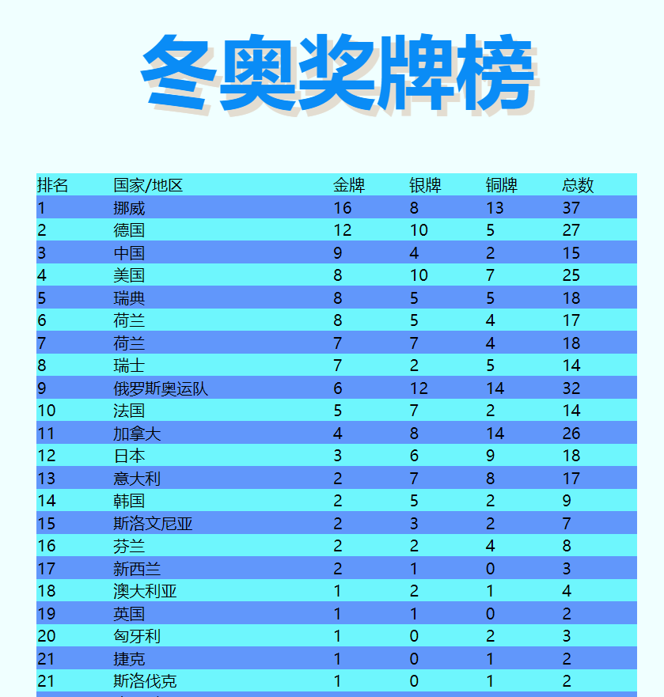

↑ 点这里可以回主网页
↓ 且看我陈述本次web大作业谢谢！
姓名：林庆聪
学号：0223742
班级：软件工程2213
名称：致2022，敬更好的我们
主题：回望2022，展望2023
选题动机:
2022年发生了太多太多事情，于我个人而言，2022年我参加了高考，度过了18岁的成年生日，踏入了大学的校门，接触了更多同学，第一次体验住校生活，在年末感染了新冠……这些都是真真实实发生在我身上令我难忘的经历；于国家而言，2022年我国成功举办了冬奥会、冬残奥会，胜利召开了二十大，航天上也有很大的突破，女足勇夺亚洲杯冠军，女篮夺得世界杯亚军；放眼国际，2022年爆发了俄乌冲突，引发世界关注，世界杯成功在中东国家卡塔尔举办，阿根廷时隔36年再次夺冠！
这些事情都让我记忆深刻，我就想能不能利用所学的前端知识来策划一个网页，记录下这些事情呢？于是就诞生了这个选题并且被我做到了最后。
· 主网页最上面就是一张图片和悬浮在图片上的文字
· 在左边有一个二级导航栏，可以点击后可以跳转到新华网、中国新闻网和央视网三个官方新闻网站，点击最上面的新闻网站还可以跳转到新闻网址导航，从而进入更多官方新闻网站
· 从主网页可以跳转到三个子网页（蓝色框出：冬奥瞬间、世界杯快报、聚焦二十大）
· 点击下方的科技、财经、军事、体育或生态都可以跳转到相应的网址（大事件盘点：2022年国内xx大事件）
· 2023年1月1日 星期日和当前在线人数2023都起点缀效果，不代表实际意义
· 回望2022年 /展望2023年 是主题
· 左上角利用了简单的js技术实现了实时更新系统时间
· 页面的左边上面是一张图片（2023）下面是2022年12月31日习总书记发表的新年贺词节选部分
· 页面的中间是介绍国内四大热点事件（二十大、冬奥……）点击Read more都可以看到对应事件的详细报道
· 页面的右边是介绍其他热点事件，点击相应的事件都可以详细查看，其中国内热点新闻按时间编排，右边显示了事件发生的日期，点击Read more可以查看更多
· 在新年贺词节选部分下面介绍了三件国际事件，点击事件可以详细查看
· 在灰色的方框中是关于作者本人的介绍，2022的回顾，对2023的展望以及个人介绍（真实）
· 在整个主网页的最下面是一段最经典的话，表达了对2023年充满着期待；还有本网页的制作人（/doge）
· 在联系方式那一栏的最下面，可以跳转到报告页（蓝色框出）
· 子网页1是介绍北京冬奥会的，取名“冬奥瞬间”（因为在北京冬奥会上有太多太多让我们难以忘怀的瞬间，青蛙公主谷爱凌挑战高难度动作夺冠，年轻小将苏翊鸣一举夺冠一鸣惊人！徐梦桃四战奥运终夺冠圆梦……）
· 顶部是一张图片（不是我自制的/doge），点击后可以跳转回到主网页
· 这个子网页用了左图片右文字和右图片左文字交叉呈现的方式介绍了北京冬奥会的开幕式和闭幕式、多位在冬奥会夺得个人奖项冠军亚军季军的运动员、在北京冬奥会挑战从没有人尝试过的4A的日本选手羽生结弦、北京冬奥会和冬残奥会吉祥物冰墩墩雪容融以及几个比较有特色的运动场馆和举行双奥开闭幕式的鸟巢
· 此子网页运用了可隐藏的侧边栏，鼠标放在左边灰色栏即可弹出，在此介绍北京冬奥会
· 颜色配色上，冠军亚军季军名字的颜色是不一样的，以此区分（但无论哪位运动员，都为国家的荣誉争光，都是我们心中的英雄！）

· 此为列表，真实记录冬奥奖牌榜
· 配色蓝，符合冬奥元素，单双行颜色是不一样的
· 子网页2介绍2022年在卡塔尔顺利举办的第22届世界杯
· 打开就是一个很大的图片，是梅西带领的阿根廷队夺冠后欢呼的场面，也是本届世界杯最沸腾的场面
· 上面有几个导航栏，点开可以跳转对应网站，最后一个“返回主页”点击即可跳转回主网页（与第一个子网页不一样，点击图片将不会有反应）
· 图片下面就是一个左图片右表格的画面
· 右边的表格介绍了本届世界杯的分组情况以及各个队伍的战绩（冠亚季军、4强、8强、16强）
· 再往下是介绍本届世界杯的八个比赛场馆（采用的均是左图片右文字的形式）
· 再往下走就是介绍本届世界杯最受人关注的四大球星（阿根廷的梅西、法国的姆巴佩、葡萄牙的C罗和巴西的内马尔）
· 四位球星两两展示，方框内上面是照片下面是名字，方框外有对球星的基本介绍
· 与子网页1类似，子网页2采用了右侧边栏，介绍了世界杯的基本情况以及个人奖项的得主
· 本网页配置了页脚部分
· 引用了著名足球解说员贺炜在本届世界杯解说中的两大金句
· 两大金句不仅指出了足球运动员的精神，更给我们的人生有很大的指示作用，告诉我们要如何对待失败，如何面对失败不放弃，还能爬起来再战！
· 子网页3介绍了2022年10月在京隆重举行的中国共产党第二十次全国代表大会
· 整个网页围绕大会主题、召开进程、大会议程、报告框架、报告金句、大会意义和引发国际社会热烈反响几大专题展开（资料来源于百度百科和上观纵览）
· 整个页面的背景色是红色，符合二十大的庄重感
· 点击“庆祝二十大”的图片可以跳转回主网页（同子网页1）
· 本子网页设置了左侧边栏，拉开可以跳转（如：点击报告框架即可跳转到报告框架那一栏）
· 当然主要还是靠自己一个学期在辜勇老师的课堂上学的html和css知识来完成这次web大作业啦
· 课余时间我也有在B站学习一些前端的知识进行巩固
· 为了让本次大作业的网页效果达到我预期的效果，我还在CSDN、W3School等各大平台学习了很多效果的实现方式，当然也逛了很多官方新闻网站，学习好的网页布局
· 时钟部分是我自学的js技术，还是比较简单的，没能再加上日期（能力有限，有待继续深造）
· 主网页的设计额外学习了很多技术（左中右排版布局+页脚四个盒子），子网页主要是课上知识，布局都相对主网页简单一点（子网页3不是简约，是文字内容太多，不便于加复杂的效果）
· 为了保持网页的美观性，我在代码上也下了一定的功夫，该对齐的都对齐了，不同的内容之间都有空格来区分，看上去不会太挤
· 主网页和子网页中的css文件都没有分开来写，一并写在了html文件当中，这就造成我的主网页的代码行数达到了比较惊人的1500+
· 首先就是选题上，我自己对轨道交通方面的知识比较感兴趣（前两次作业都是在写地铁）但在大作业中就不是很好写出来，而且子网页还要跟主网页有一定的关联，这就让我在选题方面就产生了纠结，后来我偶然在新华社和央视新闻看到了年度热点事件，我又回想了一下，2022年真的是个不平凡的一年，于是就确定了这个选题
· 其次是技术，毕竟我只学习了一个学期的web前端知识，真正的网页制作还会运用到大量的JavaScript、PHP等知识来实现炫酷的效果，我受其限制不能做太花哨，但是我还是通过自学，掌握了一些较为高级的效果展示，并且很好地运用在了我的网页制作中
· 本次期末大作业我还是真正用心去做了，也花了大量的时间，效果也比前几次作业要好很多（网页和图片也真的很多（差点把自己绕晕了QAQ））
· 受限于技术的限制，很多预期的效果还是没能实现，但我确实尽力了
· 这两天看了其他人的大作业效果，确实很炫酷，但是这种东西毕竟因人而异，我追求的还是这种简约风，毕竟新闻网站再怎样也花哨不到哪里去
· 总体我自认为还是蛮不错的
· 本次web大作业算是对我一个学期的web网页开发基础课程的知识掌握程度的考验，也是对我审美能力的考核
· 很开心在web课上认识了又帅气又有才的辜勇老师，教会了我这么多的web网页开发的知识，教会我使用html和css开发网站，教会我用GitHub上传自己的作业，让我真正爱上了前端开发，感谢相遇！
· 在web课程上，我学会了交流合作，学习借鉴优秀作品，真的收获了很多
· 下学期就没有了web课程，以后可能还会有这方面的选修课，希望还能再跟辜勇见面！
· 可能我以后不一定会从事前端开发的工作，但我相信我这一学期所学的web知识肯定会让我受益终生！
· 2022.12.9作业正式发布
· 2022.12.13开始思考选题
· 2022.12.16初步选定轨道交通方面
· 2022.12.24受新华社和央视新闻影响，选题更定为新闻类型并最终确定为本次期末大作业的选题
· 2022.12.25~29开始在网上学习web布局，为后续做准备
· 2022.12.30正式开始对主页面进行内容填充+修改
· 2023.1.2着手开始写第一个子网页
· 2023.1.3着手开始写第二个子网页
· 2023.1.5着手开始写第三个子网页
· 2023.1.7利用简单的js技术点缀主网页
· 2023.1.8完善主网页和所有的子网页
· 2023.1.11~12写报告
· 2023.1.12晚上传GitHub，提交作业
· 5个html文件（主网页+子网页*3+报告）
· 25个PNG图片
· 13个JFIF图片
· 21个webp图片
· 代码输入：Visual Studio Code
· 资料来源：百度+新华社+央视新闻+学习强国……
· 高级技术实现：CSDN+W3School+知乎+百度……
· 主网页大纲：来源于网络
· 子网页+报告：纯手工锻造
· 上传网站：GitHub
· 总耗时：近一个月，真正用时超100小时
· 特别鸣谢：hyj & yjl
· 感谢辜勇老师辛勤地为我们软件工程2210~2213四个班授课，为我们解答疑惑，即使在疫情到来的困难时期仍坚持上网课，我想在这里说：老师辛苦了！
· 在此还要感谢素未谋面的助教学姐！
· 最后提前祝老师和助教学姐新年快乐！兔年大吉！万事如意！平平安安开开心心快快乐乐每一天！
——喜欢别忘了留下个高分喔QAQ——